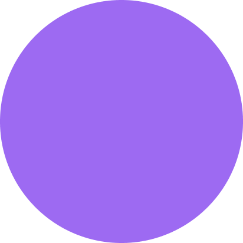

Jane Doe
Pet: Husky
I really like Tindog for my pet Huskier. Tindog really gave me an accurate and safe results. Will recommend this one!
Tindog assists dog owners whose pets are lonely. Tindog also collaborated with veterinarians and a dog adoption project. Be a part of this change

Find out more
Superb testimonials
Don't make your dog lonely